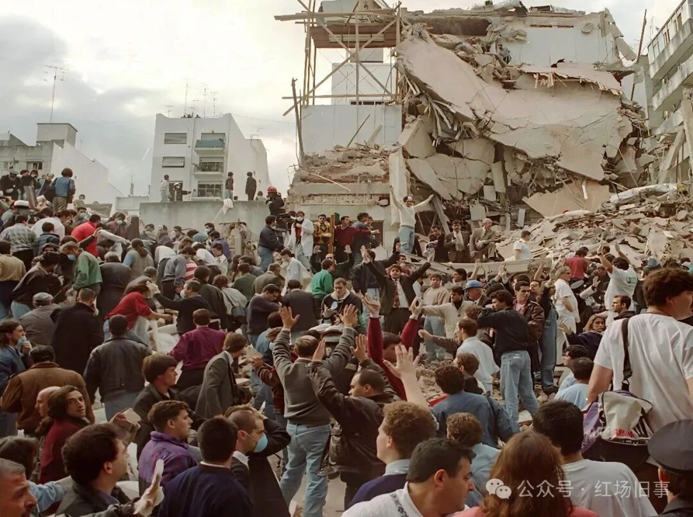
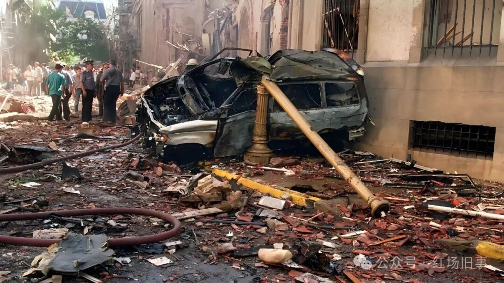
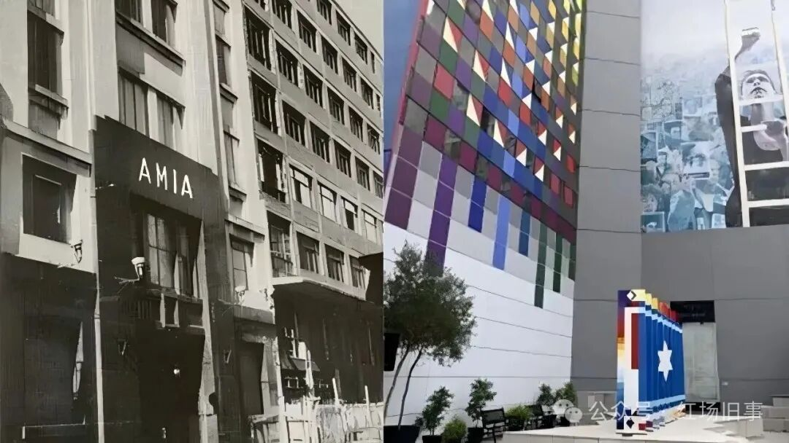
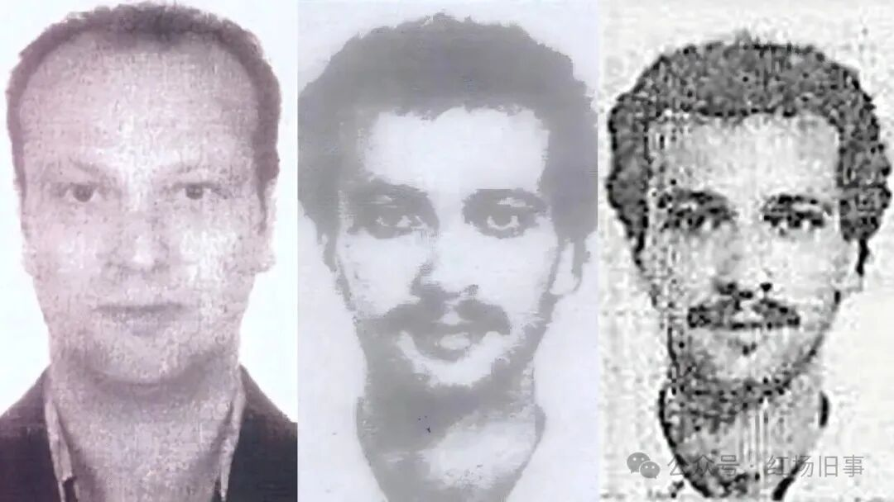

1992年3月17日，布宜诺斯艾利斯。下午2点45分，一辆福特F-100面包车撞向以色列驻阿根廷大使馆的大门。爆炸吞噬了大使馆、一座天主教堂和旁边的养老院。29人丧生，242人受伤。

两天后，黎巴嫩《安纳哈尔报》收到一份声明。发件人自称“伊斯兰圣战组织”，真主党惯用的掩护名称。阿根廷第一次遭遇国际恐怖主义，但没人料到这只是个开始。
一、1992：大使馆的覆灭
调查人员发现关键线索：那辆福特面包车是1992年2月24日从二手车行购得。买家支付的数百美元钞票上，有几张印有黎巴嫩银行的契约标识。与买家同行的男人自称马哈茂德·索海尔，他住在廉价旅馆，在阿拉伯餐厅打工，常去什叶派清真寺做礼拜。爆炸后，他消失得无影无踪。两天后，真主党通过黎巴嫩电视台播放爆炸画面，声明用阿拉伯语写道：“我们将向布宜诺斯艾利斯行动献上礼物……战争已经开始，我们将继续攻击，直到以色列从世界上消失。”
二、真主党的总设计师
幕后策划者叫伊马德·穆格尼亚。他是真主党“特别行动总指挥”，1983年策划了炸毁美国驻贝鲁特大使馆和海军陆战队军营的行动。以色列情报显示，穆格尼亚的行动得到伊朗全面支持——资金、训练、装备、情报全部由德黑兰提供。袭击动机很明确：报复以色列两个月前在黎巴嫩暗杀真主党总书记阿巴斯·穆萨维。阿根廷为何成为目标？已故最高法院法官卡洛斯·法伊特解释：“阿根廷是拉美犹太社区最大的国家，在世界排名第四。”漫长的边境线、宽松的移民政策、薄弱的监控体系，让这里成为真主党理想的境外战场。
三、1994：AMIA的血色清晨
两年后，布宜诺斯艾利斯再次迎来血色。1994年7月18日上午9点53分，一辆装载275公斤炸药的面包车撞向阿根廷犹太人互助协会（AMIA）大楼。建筑坍塌，85人丧生，300余人受伤。

这是二战以来针对犹太人最致命的袭击之一。调查显示，两起案件出自同一张网络。钞票上的黎巴嫩银行契约指向同一来源，情报人员名单中反复出现同一个名字——伊马德·穆格尼亚。更令人震惊的发现来自以色列情报机构：真主党特工持伊朗外交护照，利用外交豁免权，将炸药藏在洗发水瓶和巧克力盒里，通过商业航班从欧洲走私进入阿根廷。外交护照成了杀人执照，外交邮袋装的是炸药。
四、被掩盖的真相
爆炸前48天，阿根廷驻黎巴嫩大使发回紧急报告：《真主党领袖的讲话：在阿根廷发动袭击》。报告特别提醒：鉴于1992年使馆已被炸，对真主党的动向不能掉以轻心。8天后，国家情报局截获伊朗驻阿根廷办事处的4个可疑电话。这些警告石沉大海。负责调查的法官加莱亚诺发现，情报局内部存在“攻守同盟”，企图掩盖玩忽职守的事实。他刚要追查，梅内姆政府就以“国家安全”为由，禁止14名情报人员接受质询。此后三任总统任由案件搁置。直到2003年基什内尔上台，才下令重启调查。但时间过去9年，关键证据流失，关键证人失联。
五、2015：检察官之死
2015年1月，案件出现惊人转折。首席检察官阿尔贝托·尼斯曼掌握了一份关键证据：时任总统克里斯蒂娜·费尔南德斯与伊朗达成秘密协议，用“掩盖伊朗参与AMIA爆炸案”换取石油贸易优惠。1月18日，尼斯曼准备向国会提交证据。几小时后，他被发现死在自己公寓里，头部中弹，身边放着一把手枪。官方结论是自杀，但几乎没人相信。一个即将指控总统的检察官，会在提交证据前夜“自杀”？这起死亡案至今悬而未决。尼斯曼死后，调查戛然而止。克里斯蒂娜虽然在2024年被最高法院命令出庭受审，但指控内容早已从“掩盖恐怖袭击”变成了“与伊朗签署备忘录”。谁下令炸死85名阿根廷犹太人，仍然是一个未解之谜。
六、2025：缺席的审判
2025年，31年过去。阿根廷法院终于做出一个迟来的决定：对10名涉嫌策划AMIA爆炸案的嫌疑人进行缺席审判。名单包括伊朗前情报部长法拉希扬、前外长韦拉亚提、前革命卫队司令雷扎伊、现任内政部长瓦希迪。他们至今无人被捕，无人受审，无人服刑。AMIA主席阿莫扎在纪念仪式上说：“我们不会再接受任何借口或拖延。”阿根廷总统米莱承诺：“我们不会停止，直到正义得到伸张。”

但对遇难者家属来说，31年的等待太长。那个持伊朗外交护照、用外交邮袋运送炸药的真主党特工，那些坐在德黑兰办公室里批准行动的伊朗高官，此刻仍安然无恙地活着。
七、悬疑：谁是下一个？
2008年2月12日，叙利亚大马士革，一声爆炸划破夜空。伊马德·穆格尼亚——真主党的“影子总指挥”，死在以色列摩萨德暗杀之下。他死前知道阿根廷的真相，死后带走了所有秘密。更大的悬疑仍未解开：1992年和1994年两起爆炸案的执行者中，至少有三名关键人物——黎巴嫩人苏莱曼、黎巴嫩裔哥伦比亚人埃尔-雷达、真主党外国安全机构的核心成员侯赛因·穆萨维，至今藏身于黎巴嫩的某个角落。

阿根廷司法系统尝试引渡，但伊朗拒绝合作，黎巴嫩置之不理。国际刑警组织的红色通缉令成了一纸空文。而那些炸药藏在洗发水瓶和巧克力盒里穿越欧洲的细节，只有他们自己知道。2012年，保加利亚布尔加斯机场，一辆载有以色列游客的巴士爆炸，5名以色列人和1名保加利亚司机丧生。袭击者又是真主党。从贝鲁特到布宜诺斯艾利斯，从索菲亚到曼谷，真主党的足迹遍布全球。谁会是下一个目标？下期预告
2002年，伊朗纳坦兹核设施曝光，国际社会震惊。
2005年，伊朗极端保守派总统内贾德上台，多次发表“将以色列从地图上抹去”的言论，并宣称大屠杀是“神话”。
下一集，《“将以色列从地图上抹去”：内贾德时代的核风暴》，探究内贾德的激进言论，究竟是真实意图还是政治表演？俄罗斯为何宁可得罪美以，也要保护伊朗核计划？
哈梅内伊、苏莱曼尼、内贾德：一个时代的终结第15期 他是剑桥五杰之外最危险的间谍，普京亲自给他颁奖
文字与图片版权归各自权利人所有；排版根据抓取内容整理。